總統來到何欣純競總成立大會 @Chingte_Taiwan
Posts
總統來到何欣純競總成立大會 @Chingte_Taiwan
@schuanglawyer:尋找桃園杰出好青年 .ᐟ 杰伴小隊熱血招募中🔥 桃園需要更多青年的聲音，來和黃世杰一起「杰伴同行」吧！ 我要邀請對桃園有愛、有想法、有服務社會衝勁跟熱血的杰出好青年，一起來分享你對桃園的觀察、期待和願景。 年輕桃園的未來，青年不缺席！ 現在就加入杰伴小隊，一起球給世杰，行動出自己的未來💖

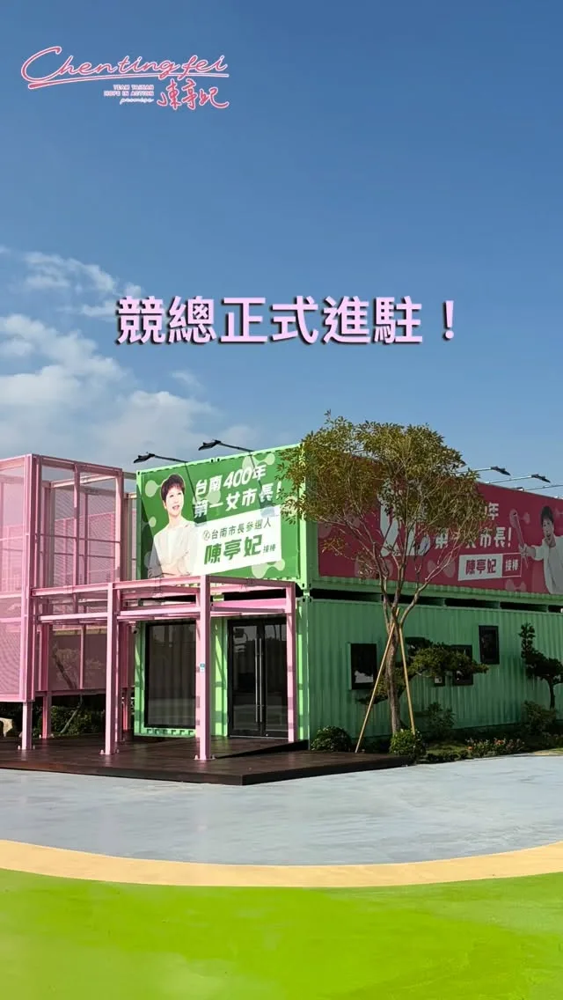
@chen_tingfei:今天我與團隊夥伴們正式進駐競選總部！ 這裡不只是作為選舉基地，空間設計上也有很多巧思，我們結合自然、親子、生活等概念，成為「美學台南」的選戰空間，讓政治也能充滿溫度！ 今天謝土儀式圓滿完成，也代表開始進入下一階段。我有信心，和台南隊的夥伴們一起，一步一步把我們對台南的想像變成行動，也把大家對這座城市的期待接起來。 10月11日下午3點，競選總部成立大會，邀請大家一起來競總走走！ 台南市長候選人陳亭妃競選總部 📍台南市永康區水漾路520號

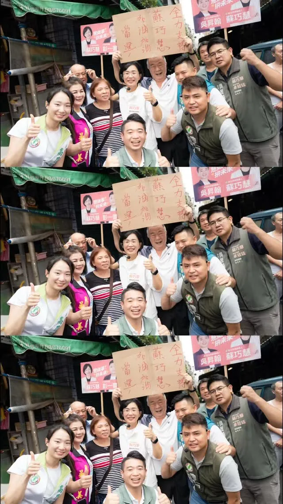
@su.chiaohui:一早和新北隊一起到土城學府市場和鄉親好朋友問好！ 感謝大家的熱情支持，我們一起繼續拚！拚出新北新時代！
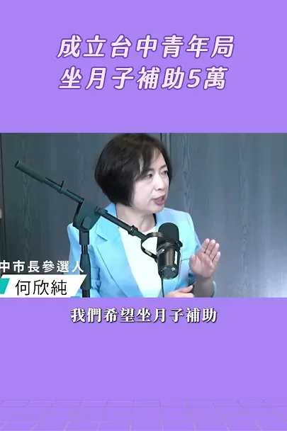
台中，年輕的城市，滿滿年輕的活力、創意；不分世代、在台中這座城市都能找到屬於自己的生活與發展模式！新台中，交給何欣純！

想拿沈伯洋的文宣品，不用再四處找啦！ ⠀ 「洋流好店」有沈伯洋的文宣品喔！ 也可以打開「洋流好店」地圖， 就能找到鄰近的友善店家索取文宣品， 也歡迎用行動支持店家。 ⠀ 如果你也願意在店內協助放置文宣品， 可以直接透過店家地圖申請加入「洋流好店」， 讓支持的力量遍布台北每個角落！⠀ ⠀ 📍查看洋流好店：https://storemap.puma.taipei ⠀ 一間店、一份文宣品，匯聚成改變台北的洋流。 ⠀ #台北順起來 #你的市長沈伯洋

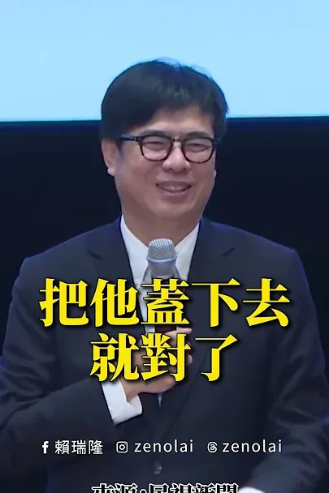
把高雄放在心上、把責任扛在肩上，我會全力以赴為高雄努力！
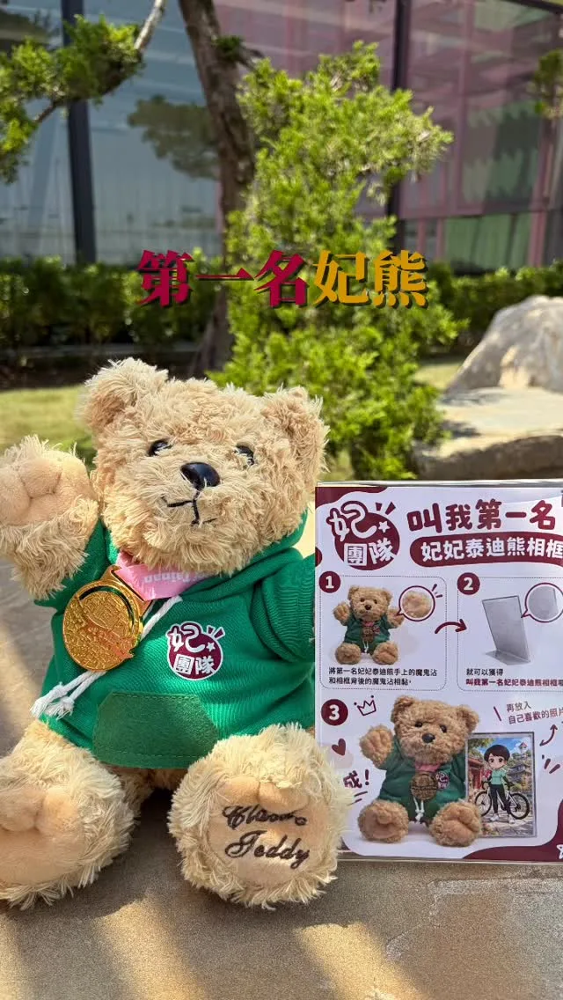
@chen_tingfei:繼農業熊、漁業熊之後，今天「第一名妃妃泰迪熊」正式登場！ 妃妃泰迪熊穿著專屬帽T，掛著象徵第一名的獎牌，還可以把自己最喜歡的照片放進相框裡❤️ 不過先偷偷說，妃妃泰迪熊總共有9款。 下一隻會是什麼主題的妃熊呢？大家拭目以待🤩
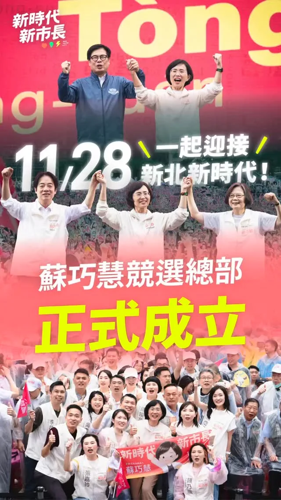
@su.chiaohui:一起拚，拚出新北新時代！ 感謝 @william_chingte 總統、@tsai_ingwen 小英總統、@chenchimai 市長，以及到現場支持我們的2萬名市民！ 未來的新北，除了基礎建設要做得又快又好，更要運用新科技、新技術和新觀念來一起推動市政，讓企業願意投資新北、人才願意留在新北，打造專屬新北市的「城市品牌」，讓在地人、外地人都喜愛這座城市。
@pumashen:剛到家 想說寫一下石牌的心得 但因為被人潮震驚到了 一時間不知道該寫什麼 總之 真的很謝謝大家 中間還下雨 真的對大家很不好意思 希望大家都有吃飯、有吃飽～ 收到很多建言與鼓勵 我一定會好好努力的 我愛大家
何欣純競總成立大會 蔡其昌總召 @tsaimimi0416
何欣純競選總部成立
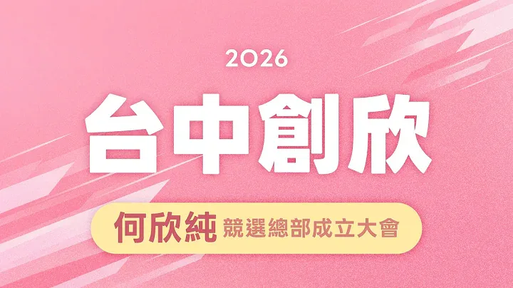
新台中 正式啟動！何欣純競選總部成立大會｜台中市長候選人何欣純 LIVE 🔴
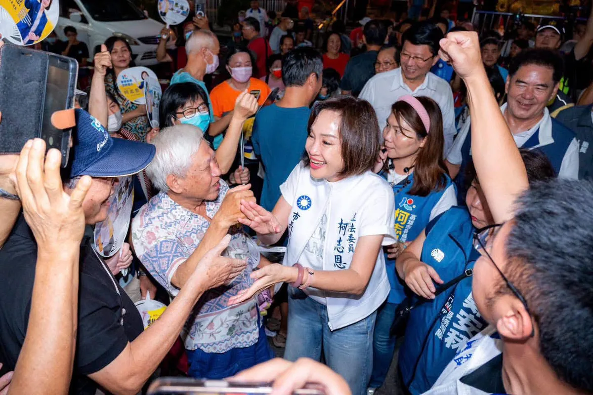
@prof.kochihen:四年前我們一起種下希望，四年後我們一起收穫改變！ 昨晚來到鳳山代天府，看著滿滿鄉親坐滿廟埕，心裡有很多感觸。 鳳山 對我來說，一直是很特別的地方。六歲時，我第一次當花童就在鳳山；2018年，我第一次站上萬人造勢舞台，也是在鳳山。那一次，我看見庶民的力量，也看見高雄人渴望改變的心。 四年前，我第一次大型造勢活動同樣在鳳山，直到今天，我仍然記得那些坐著輪椅、頭髮斑白的90歲老黨員緊緊握著我的手，告訴我：「中華民國靠你了。」那一刻，我感受到的不只是鼓勵，更是一份沉甸甸的責任。

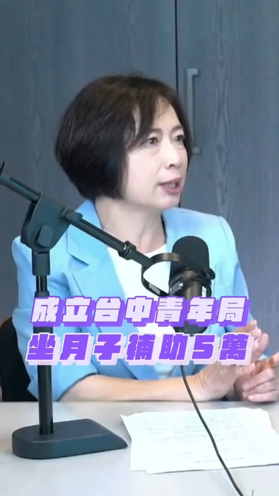
@a_chun1973:今天我的競選總部成立！歡迎各位市民朋友來參加！ 台中，年輕的城市，滿滿年輕的活力、創意；不分世代、在台中這座城市都能找到屬於自己的生活與發展模式！ 新台中，交給何欣純！
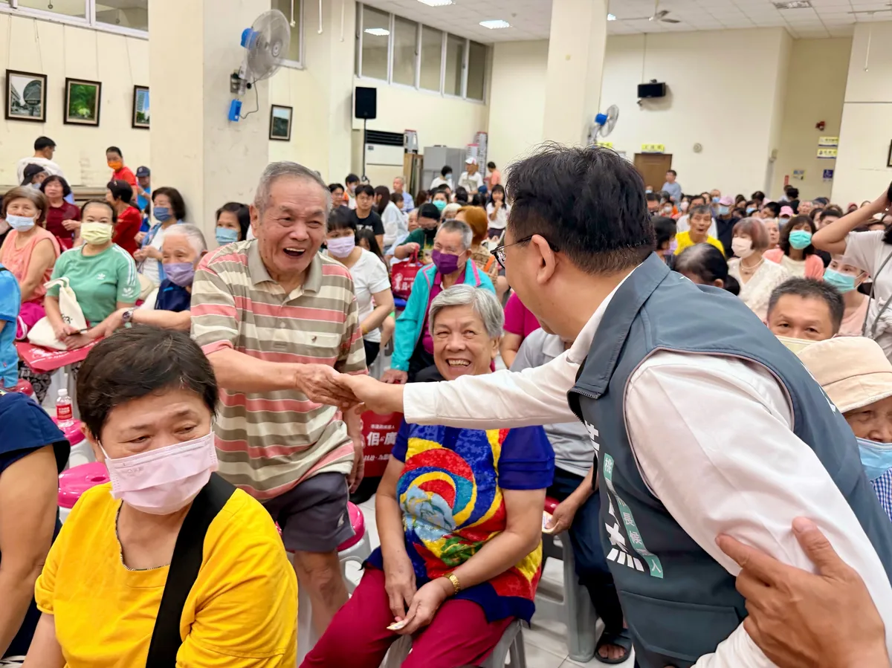
@schuanglawyer:今晚一口氣跑了八場中秋晚會🏃每次跟市民朋友碰面，都想趕快把我對桃園的願景跟熱情分享出去。 桃園是六都最年輕的城市，應該要有年輕城市的活力。建設要加快腳步，機能要加倍完整，生活要一天比一天更幸福！ 請大家成為我的力量，杰伴打造讓青壯世代放心拚、孩子快樂長大、長輩安心生活的宜居之城💖

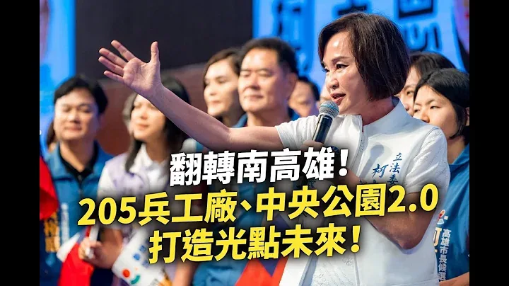
"South Kaohsiung Support Association" Officially Established: Transforming South Kaohsiung, Creat...

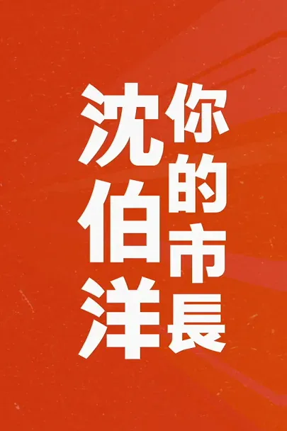
Thank you to my accountant friends for forming a support committee and giving me your steadfast b...
一起拚，拚出新北新時代！ 感謝 @william_chingte 總統、 @tsai_ingwen 小英總統、 @chenchimai 市長，以及到現場支持我們的2萬名市民！ 未來的新北，除了基礎建設要做得又快又好，更要運用新科技、新技術和新觀念來一起推動市政，讓企業願意投資新北、人才願意留在新北，打造專屬新北市的「城市品牌」，讓在地人、外地人都喜愛這座城市。
何欣純競選主題曲《咱的台中 咱來顧》MV首播！
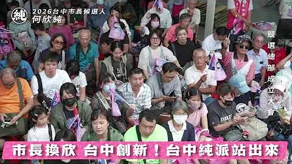
何欣純競總成立大會 鄭麗君行政院副院長這樣說 @lichiunTW
神力女超人來相挺，一起翻轉大台南｜謝龍介
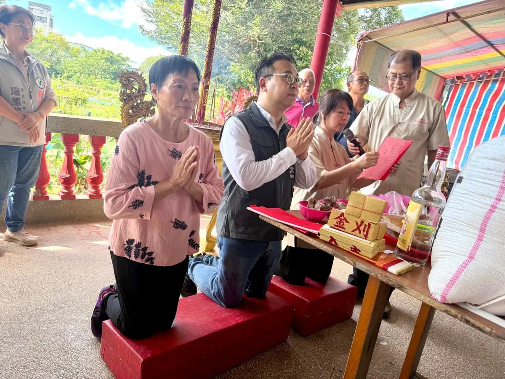
@schuanglawyer:一早來到龍潭虹橋土地公，聽到全程以客語進行、遵循正統客家禮俗的三獻禮。身為客家子弟，真的非常感動。 承蒙桃園市禮儀承展協會用心協助，讓這場儀典莊重而圓滿。面對傳統文化的流失，時間不等人，未來世杰擔任市長，一定大力支持客家語言及文化復振，讓本土文化存續、客家精神永流傳！ 請伯公庇佑世杰，亻厓會煞猛守護桃園、守護台灣，摎大自家共下來打拚❤️
何欣純青商會🌏打造青年局 讓台中與國際接軌🤖
@pumashen:想拿沈伯洋的文宣品，不用再四處找啦！ ⠀ 「洋流好店」有沈伯洋的文宣品喔！ 也可以打開「洋流好店」地圖， 就能找到鄰近的友善店家索取文宣品， 也歡迎用行動支持店家。 ⠀ 如果你也願意在店內協助放置文宣品， 可以直接透過店家地圖申請加入「洋流好店」， 讓支持的力量遍布台北每個角落！⠀ ⠀ 📍查看洋流好店：https://storemap.puma.taipei ⠀ 一間店、一份文宣品，匯聚成改變台北的洋流。 ⠀ #台北順起來 #你的市長沈伯洋

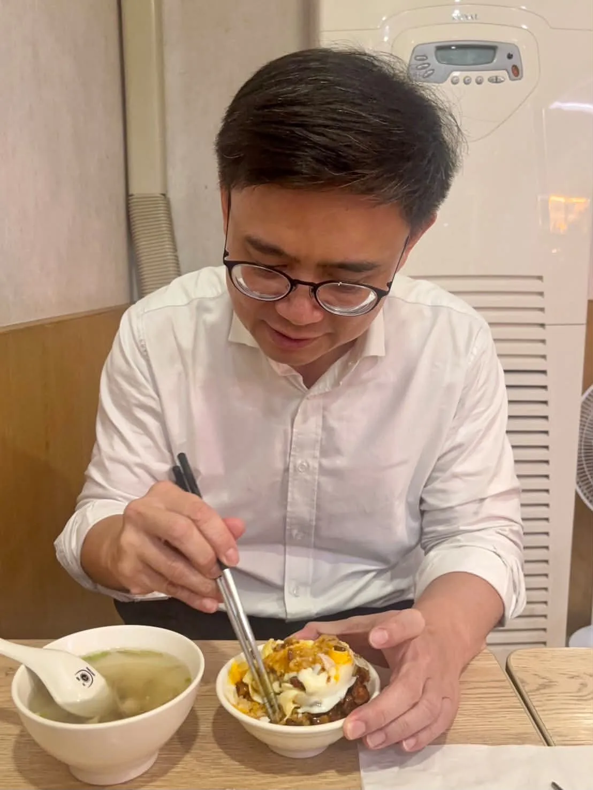
@zenolai:趁著行程空檔來碗肉燥飯，也外帶幾份給助理們。 一碗肉燥飯，有人喜歡滷汁多一點、有人喜歡清爽一點，每個人口味不同；一座城市也是一樣，有不同的想法、不同的選擇。 高雄之所以偉大，就在於城市有多元的聲音，也有包容不同選擇的胸襟。我也會繼續努力，爭取更多市民的認同。 每一位認真打拚、用心經營的在地店家都相當不簡單，我們一起支持高雄好味道，也祝福大家生意興隆！

龍介來囉！和你談天說地論台灣｜龍介的直播
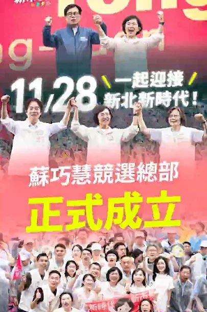
Let’s strive together to build a new era for New Taipei!
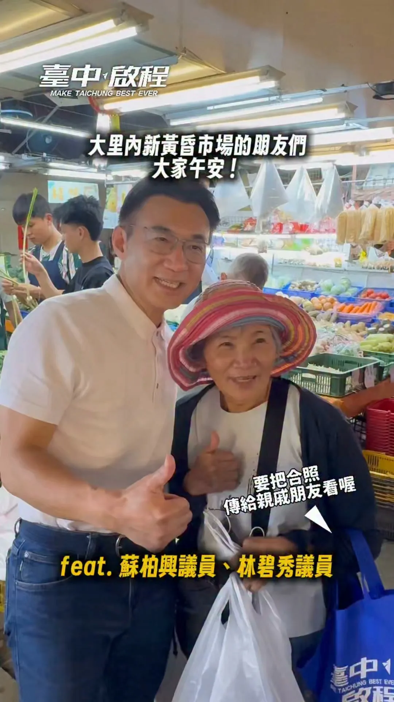
昨天9/10下午在林碧秀議員、蘇柏興 興台中議員的陪同下，我們來到大里內新黃昏市場掃街拜票，向所有攤販老闆、採買的老朋友懇託！也謝謝送我好彩頭的老闆、投食的店家、以及為我加油打氣喊凍蒜的鄉親！啟臣會加倍努力💪讓 #臺中升級 #幸福加給！ #臺中啟程 #打造旗艦城 #以民為本 #臺中大里
@a_chun1973:競選主委我有「雙主菜」蔡英文榮譽主委和蔡其昌主委； 競選歌曲，我們也推出「雙核心」，由何欣穗來幫忙何欣純創作「咱的台中咱來顧」。 感謝大台中的優秀音樂人聚合，何欣穗、小龜和奇哥一起創作這首歌，也感謝林昶佐Freddy的牽線，促成這次的合作。 台中，是我們的家鄉！ 11/28市長換欣，讓台中創新。 市民對未來好時光的憧憬，免驚！讓我來顧。